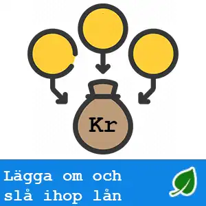

Visste du att genom att lägga om lån kan du få bättre ränta och villkor redan idag? Vi kan här informera dig om fördelarna som bland annat inkluderar lägre månadskostnader, förbättrade lånevillkor och möjlighet till snabbare amortering.
Vi vet av erfarenhet att det kan leda till bättre ekonomisk kontroll och minskade totala räntekostnader.

Frågor och Svar []
Långivaren med högst beviljandegrad (exempelränta 9.02 %) för april 2025 är COOP
Att lägga om ett lån innebär att du refinansierar det genom att byta långivare eller förhandla om lånevillkoren för att få bättre ränta och villkor.
Att slå ihop lån innebär att du kombinerar flera lån till ett enda lån för att hantera din skuld på ett mer organiserat sätt och eventuellt få bättre villkor.
Fördelarna med att lägga om ett lån kan inkludera lägre ränta, lägre månatliga betalningar, längre återbetalningstid, enklare administration och bättre överblick över skulden.
Fördelarna med att slå ihop lån inkluderar att du kan betala av flera mindre lån med ett större lån, vilket kan ge bättre överblick och lägre ränta.
Du kan lägga om eller slå ihop olika typer av lån, såsom privatlån, bolån, kreditkortsskulder eller andra konsumtionslån.
Det kan vara svårare att lägga om eller slå ihop lån om du har en dålig kreditvärdighet, men det är inte omöjligt. Det kan vara värt att kartlägg olika alternativ och tala med långivare för att se om det finns möjligheter.
Det kan finnas kostnader och avgifter för att lägga om eller slå ihop lån, såsom uppläggningsavgifter, överföringsavgifter eller eventuella förtidsbetalningsavgifter från befintliga lån.
Att lägga om eller slå ihop lån kan påverka din kreditvärdighet i början, eftersom det innebär att du tar ett nytt lån. Men om du hanterar det nya lånet på ett ansvarsfullt sätt kan det på sikt förbättra din kreditvärdighet genom att du minskar antalet skulder och betalar i tid.
Topplista lån för omläggning
Topplista för rekommenderade och utvalda lån för omläggning 2024. För hjälp att få okomplicerat lån för omläggning med hög servicenivå tipsar vi om följande:
Lendo – Jämför lån kostnadsfritt – Beror på långivare
Lånekoll – Förbättra dina lån – Direktutbetalning – du slipper vänta
Räkneexempel om annuitetslån på 300 000 kr med start-/aviavgift 0kr, återbetalningstid 15år, rörlig ränta 7,0%, effektiv ränta 7,23% ger (180) månadsbetalningar om 2696 kr totalt betalningsbelopp 485 367 kr. Räntor: 20230826.
Vid 8,67 % rörlig ränta är den effektiva årsräntan 9,02 % för ett annuitetslån på 165 000 kr med 10 års återbetalningstid med tot. 120 återbetalningar, uppläggningsavgift 0 kr och aviavgift 0 kr med autogiro. Givet oförändrad ränta och aviavgift blir tot. belopp att återbetala 247 725 kr och månadskostnaden 2 072 kr. Individuell ränta 5,20%–16,95% (effektiv ränta 5,33%–25,46%). Kreditgivare MedMera Bank (2024-02-27).-
Rekommenderade långivare - lån för omläggning
Jämförelse av utvalda långivares exempelräntor, kostnad och belopp
För jämförelse av lån för omläggning tittar vi på lågräntelån och hämtar räntor och kostnader från långivarnas egna exemel på vanliga kreditsituationer.
I tabellen kan vi bland annat se hur stora lån som är vanliga samt vilka fördelar långivaren kan erbjuda.
Scrolla tabellen
Trustpilot
Minbelopp
Maxbelopp
Exempelbelopp
Ränta från
Ränta till
Utbetalning
Startavgift
Aviavgift
Upplysning
Låneskydd
-
15 000 kr
500 000 kr
165 000 kr
5,2 %
16,95 %
1-2 bankdagar
0 kr
35 kr
COOP lån för omläggning Ränta 5,2 - 16,95 %
Vid 8,67 % rörlig ränta är den effektiva årsräntan 9,02 % för ett annuitetslån på 165 000 kr med 10 års återbetalningstid med tot. 120 återbetalningar, uppläggningsavgift 0 kr och aviavgift 0 kr med autogiro. Givet oförändrad ränta och aviavgift blir tot. belopp att återbetala 247 725 kr och månadskostnaden 2 072 kr. Individuell ränta 5,20%–16,95% (effektiv ränta 5,33%–25,46%). Kreditgivare MedMera Bank (2024-02-27).-
Räkneexempel om annuitetslån på 300 000 kr med start-/aviavgift 0kr, återbetalningstid 15år, rörlig ränta 7,0%, effektiv ränta 7,23% ger (180) månadsbetalningar om 2696 kr totalt betalningsbelopp 485 367 kr. Räntor: 20230826.
Annuitetslån 12 år. Effektiv årsränta 6.98 %. Ett lån på 200 000 kr kostar då 2032 kr/månad (144 avbetalningar), dvs totalt 292 653 kr. Ingen start-/aviavgift. 6.77 % nominell ränta (rörlig ränta, sätts individuellt baserat på dina förutsättningar). Ansökan kommer att skickas till de kreditgivare som bäst matchar din profil, uppdaterat 2023-03-01. Återbetalningstid 1-15 år. Maximala räntan är 32,49%. Räntespann mellan: 3,25%-32,49%.
[april 2025]
Statistik (antal lån för omläggning)
Utvalda lån
3
Lägsta belopp
10 000 Kr
Högsta belopp
600 000 Kr
Snitt exempelbelopp
221 667 Kr
Lägst ränta
5,2 %
Högst ränta
33,9 %
Startavgift
0
Aviavgift
1
Anmärkning OK
2
Räntespann lån för omläggning []
COOP
Lånekoll
Lendo
Det här innebär det att lägga om lån
Om du redan har lån är det ofta klokt att lösa lån genom att låna ett större belopp. Genom att använda metoder för att lägga om dyra lån går det enkelt att få lägre totalkostnad för dina lån. Anledningen till det är enkel.
De fasta kostnaderna för att administrera ett lån är lika stora för ett litet sms lån som ett stort lån och därför kan du få mycket bättre villkor/ränta genom att samla lån och låna hos en enda långivare.
Genom att lägga om lån går det att få bättre ränta hos en bättre långivare. Det är en enkel och snabb lösning på problemet. Istället för att betala till flera olika banker och kreditgivare får du istället ett lån med vilket du betalar alla gamla skulder.
Hur lägger jag om lån?
Ansök om ett lån utan säkerhet och kryssa i alternativet att en del av pengarna ska gå till att lösa gamla lån. Skicka in vilka lån du har så kommer den nya kreditgivaren att göra hela jobbet.
Lånemäklare kan lägga om lån
En lånemäklare har till uppgift att hitta lån med lägst ränta åt sina kunder. Genom mäklarens omfattande kontaktnät kan han eller hon spela ut långivarna mot varandra. De konkurrerar om att erbjuda låg ränta och den som erbjuder den lägsta räntan tar hem kunden. Det kostar ingenting att anlita en lånemäklare.
Det är bara att luta sig tillbaks och vänta på tips från lånemäklare som hjälper till att hitta lägst ränta och sedan ta ställning till erbjudandet.
Lån med en kreditupplysning
En av de stora fördelarna med att ansöka om att låna pengar online via en lånemäklare är att det bara behövs en upplysning. Samma kreditupplysning delas av alla banker och kreditgivare som ingår i lånemäklarens samarbetsnätverk.
Lånemäklaren skickar ut en förfrågan till sitt kontaktnät. När alla erbjudanden kommit in presenteras de för kunden som kan välja det bästa erbjudandet. Genom att ”spela ut” bankerna mot varandra blir det bättre priskonkurrens och kunden till lånemäklaren kan få ett billigare lån.
Så fungerar omläggning av lån
Det finns många bra alternativ för att lägga om lån som kan spara både tid och pengar. Genom att välja en långivare som finns på lastoffer.net går det att få en bättre ränta och fortare bli av med skulderna.
Många tror att omläggning av lån endast gäller för bolån men så är inte fallet. Det är viktigt för alla konsumenter som sitter fast med dyra lån att bli medvetna om att det går att få hjälp.
Det går att ta sig ur trassliga lånehärvor. Bästa metoden är att låta en ny långivare betala tillbaks de dåliga lånen med ett nytt och bättre. Om det har gått några år sedan du samlade på dig de dyra krediterna är chansen god att du idag kan hamna i ett nytt läge. Då kan det vara smart att ta reda på mer om att samla lån med ett nytt som har en lägre räntenivå.
Högre lön och mindre skulder bara två av många faktorer som kan ha förbättrats till din fördel.
Det finns många fördelar med att lägga om dyra lån och krediter
Ett nytt lån med bättre villkor gör att mindre pengar läggs på räntekostnader.
Bättre kreditbetyg.
Är det en bra idé att byta långivare?
Alla lån går att lägga om. För att det ska löna sig krävs att de gamla lånen är dyrare än vad som kan erbjudas på marknaden idag.
Kanske går det att ansöka om lån hos en ny långivare som kan erbjuda en lägre ränta. Det går också att lägga på bördan genom att förlänga återbetalningstiden och på så vis minska månadsbetalningarna.
Om en låntagare har betalat i tid på sitt lån under en längre är det möjligt att kreditpoängen som alla större kreditgivare utgår ifrån har förbättrats. Om så är fallet, är det nästan säkert att det går att få ett bättre erbjudande på lån genom att vända sig till en ny långivare.
Ta nytt lån för att betala tillbaks andra
En annan bra anledning till att ta ett nytt lån för att betala tillbaks andra lån är att det går att höja lånet och på så vis komma åt friska kontanter.Kryssa i rutan för ”delar av lånet ska användas för att återbetala gamla krediter” och välj ett lånebelopp som är högre än de lån som ska betalas av.
När ett tidigare privatlån läggs om kan förfallodatum förlängas beroende på den amorteringsplan som låntagare och långivare är överens.
Detta kan vara antingen positivt eller negativt beroende på låntagarens kreditvärdighet. Genom att förlänga återbetalningstiden går det sannolikt att minska månadsbeloppet. Dock kan det medföra att låntagaren sitter kvar med skulden längre.
Den som funderar på att lägga om lån bör vara försiktig med vilka val som görs. Det är viktigt att fundera på om en ny lösning på lån istället riskerar att leda till en onödig förlängning av återbetalningstiden.
Eftersom villkoren i ett lån utan säkerhet bestäms av låntagarens kreditvärdighet är erbjudanden från banker och andra kreditgivare olika för alla kunder.
Det är endast ett bättre kreditbetyg, en förbättring av den ekonomiska situationen eller genom att hitta en billigare långivare som det går att framgångsrikt refinansiera dyra lån och få till en bättre lånelösning.
Om du har gamla dyra krediter eller blankolån som är för dyra finns det all anledning att överväga att samla lånen med ett nytt lån som har en bättre lånelösning.
Checklista för att lägga om dyra lån
Ingen kredit utan betyg
Innan du tar steget och gör en ansökan om ett nytt lån för att samla ihop gamla dyra krediter bör du först fråga dig själv om din kredithistoria har förbättrats tillräckligt för att du ska kunna få ett erbjudande om billigare lån.
Om din kreditpoäng inte var den bästa när de gamla lånen och krediterna togs och du har gjort dina månatliga betalningar i tid är ditt kreditbetyg med stor sannolikhet redan bättre. En ny långivare kommer att granska utvecklingen av utnyttjade krediter. Efter det görs en bedömning om de vill betala dina gamla skulder genom att bevilja ett nytt lån.
Om du fortsätter att göra betalningar i tid till den nya långivaren är det lättare att efter en tid få ner räntan även på det nya lånet eftersom en kund med ett större lån alltid har en bättre förhandlingsposition en liten.
Att på olika sätt visa att du är en bra affär för en ny långivare är en av de viktigaste saker du kan göra för att framgångsrikt lägga om dyra lån och få ordning och reda på hushållsekonomin.
Lönsamt att jämföra erbjudanden från långivare
Efter att du har sett över befintliga lånen det dags att kontakta nya långivare för erbjudanden. Gör långivaren medveten om att du vill använda lånet för att betala tillbaks befintliga lån. Om du får ett erbjudande du inte är nöjd med. Tacka då nej och skicka in en ansökan till andra banker och kreditmarknadsföretag och gör en jämförelse.
Genom att jämföra lån från flera olika långivare går det att välja vilket som är bäst. Välj ut två långivare som verkar bäst och välj den med som ger det bästa budet. De flesta kreditgivare ser positivt på kunder som vill använda ett lån till att lägga om dyra krediter. Det är därför det är så hård konkurrens om att ge bra villkor till den kundkategorin.
Överväg P2P utlåning
Om du inte är nöjd med de erbjudanden du får är ett alternativ att söka ett lån från alternativa källor.
En ny digital marknadsplats för lån mellan privatpersoner är peer-to-peer utlåning där enskilda människor ger lån till andra privatpersoner. Investerare deltar i utlåningsgrupper och tjänar pengar från den ränta som de får på sina lån.
P2p lån kan innebära en lägre kostnad eftersom många privatpersoner nöjer sig med en lägre ränta för att låta någon låna pengar.
Nästan alla lån sker nu på nätet
Att lägga om dyra lån på banken och redovisa alla gamla dyra lån som du vill betala tillbaks kan vara en både omständlig och pinsam process att ta ett lån.
Istället för att fylla i en massa papper och är det enklare och snabbare att vända sig till någon av de nya och smidigare långivarna som erbjuder bra och rimliga lån genom sin verksamhet på nätet.
Detta innebär att du inte behöver fylla i krångliga papper och svara på frågor från en nitisk banktjänsteman innan lånet kan göras klart.
Få svar på frågor
Grundläggande uppgifter som personnummer och bankkonto för utbetalning av lån måste alltid lämnas med en ansökan. Om det finns ett alternativ för att lösa gamla lån ska det kryssas i.
Kompletterande frågor kan komma i ett senare skede om lånet inte beviljas direkt. Men även låntagaren bör ställa frågor och göra sig informerad om vilka villkor som gäller. Läs här om lån med hög beviljandegrad.
Dessa frågor bör omfatta, men är inte begränsade till:
Finns det en ansökningsavgift?
Vilken är återbetalningstiden?
Finns det några begränsningar i hur jag kan använda pengarna från lånet?
Finns det några dolda avgifter på lån?
Efter du har fått godkänt så kommer den nya långivaren själv att ta hand om att avsluta och betala tillbaks de gamla lånen.
Du kommer att få hem brev med posten från dina gamla kreditgivare att skulden är betald.
Slutresultatet av omläggningen blir en ny räkning med ett lägre belopp än summan av alla de gamla krediterna. Detta ger mer pengar i plånboken och en roligare privatekonomi.
För och nackdelar med att lägga om lån
Fördelar med att lägga om lån
Lägre ränta och minskade månadskostnader.
Förbättrade lånevillkor och flexibilitet.
Möjlighet att betala av lånet snabbare.
Bättre ekonomisk kontroll och översikt.
Potential att spara pengar på lång sikt.
Nackdelar med att lägga om lån
Eventuella kostnader för att bryta nuvarande lån.
Risk för högre totala räntekostnader om löptiden förlängs.
Krav på ny kreditupplysning som kan påverka kreditvärdigheten.
Kan vara tidskrävande att hitta och förhandla nya lån.
Möjlighet att hamna i en sämre ekonomisk situation om villkoren inte förbättras.
Betala dyra lån
Att betala av dyra lån kan vara en stor ekonomisk börda, men det finns strategier som kan hjälpa dig att hantera dina skulder mer effektivt. En av de mest effektiva metoderna är att samla ihop dina dyra lån i ett nytt och billigare lån. Detta kallas ofta för skuldrefinansiering och kan ge flera fördelar.
En av de största fördelarna med att refinansiera dina dyra lån är att du kan få en lägre ränta. Genom att samla dina lån till ett enda lån med en lägre ränta, kan du minska dina månatliga räntekostnader betydligt. Detta gör det lättare att hantera din ekonomi och kan frigöra pengar för andra viktiga utgifter.
En annan fördel med att samla dina lån är att du får bättre översikt och kontroll över dina skulder. Istället för att behöva hålla reda på flera olika betalningar varje månad, har du nu bara en enda betalning att tänka på. Detta kan minska stressen och göra det enklare att hålla sig till en budget. Läs mer om hur du kan få svar direkt på lånemöjligheter.
För de som har oregelbundna inkomster eller saknar fast anställning, kan det vara särskilt fördelaktigt att refinansiera dyra lån. På så sätt kan du hitta långivare som erbjuder lån utan fast anställning. Detta ger dig större flexibilitet och möjligheter att hantera dina skulder trots osäkra inkomster.
Betala dyra lån med betalningsanmärkningar
Om du har betalningsanmärkningar kan det vara svårt att få nya lån med bra villkor. Men det finns fortfarande möjligheter att hitta långivare som erbjuder lån trots betalningsanmärkningar. Detta kan vara en lösning för att refinansiera dina dyra lån och få bättre villkor.
Slutligen, om du har möjlighet, över väg att låna pengar utan ränta. Vissa långivare erbjuder räntefria lån under en begränsad period, vilket kan vara en utmärkt möjlighet att minska dina skulder utan extra kostnader.
Kort sagt kan refinansiering av dyra lån ge flera fördelar, inklusive lägre räntor, bättre översikt över skulder och möjlighet att hantera lån trots oregelbundna inkomster eller betalningsanmärkningar. Det är en effektiv strategi för att förbättra din ekonomiska situation och minska stressen kring skulder.
Stigs personliga reflektioner över att lägga om och slå ihop lån
Jag känner att omläggning av lån är en av de bästa metoderna för att ta kontroll över sin ekonomi, men jag tycker det är avgörande att man närmar sig det med försiktighet och kunskap. Jag ser att många människor sitter fast med dyra lån och krediter, och det är positivt att det finns möjligheter att förbättra sin situation genom att slå ihop eller lägga om dessa lån.
Jag vill understryka att det främsta målet bör vara att minska den totala kostnaden för lånen, vilket kan uppnås genom att få en lägre ränta eller bättre villkor. Om du är överbelånad är det direkt oansvarigt att inte undersöka möjligheterna till omläggning, särskilt om man har haft dyra lån under en längre tid. Jag tycker att det är bra att det finns långivare som specialiserar sig på att hjälpa kunder med just detta.
Men jag känner också en viss oro och jag vill därför uppmärksamma dig på att det även finns risker, som att den totala räntekostnaden kan bli högre om man förlänger återbetalningstiden. Jag tycker att det är viktigt att jämföra olika alternativ noggrant och se till att man verkligen får en bättre ’deal’. Jag känner starkt att man inte ska låta sig lockas av snabba lösningar och att det är viktigt att ha en realistisk plan för återbetalningen.
Jag tycker att det är viktigt att förstå att en ny kreditupplysning kan påverka kreditvärdigheten, även om det kan förbättras på sikt om man sköter det nya lånet. Du bör också veta att det kan vara en fördel med att använda en lånemäklare för att jämföra erbjudanden och spela ut långivarna mot varandra, men man måste fortfarande vara kritisk till slutresultatet. Slutligen vill jag att du tar ed dig att man inte tar ett nytt lån för att betala tillbaka de gamla utan att verkligen ha en hållbar strategi för sin ekonomi.
Friskrivning: All information var korrekt vid publiceringstillfället. Räntor och avtalsvillkor förändras kontinueligt och därför kan långivarens villkor ha ändrats. LastOffer.net är inte en låneförmedlare, kreditmarknadsföretag eller långivare. För individuell vägledning hänvisar vi till en professionell lånerådgivare. LastOffer.net kan erhålla ersättning för länkar och hänvisningar till andra hemsidor, men vi förhåller oss objektiva till den information vi förmedlar. För frågor, funderingar eller påpekande om avvikelser, vänligen kontakta oss på info@lastoffer.net. Genom att använda vår webbplats accepterar du dessa villkor.